Theme Settings
Theme Settings allow you to control the overall design and common elements of your online store. From this panel, you can customize important aspects such as colors, typography, and other global styling options that appear throughout your website. These settings help maintain a consistent look and feel across all pages while allowing you to easily match your store’s appearance with your brand identity without editing any code.
Colors
One of the most important elements in creating a visually appealing and functional online store is the proper use of color. A well-designed color system helps reinforce your brand identity while also improving the overall shopping experience for your customers. In Gravity, color schemes allow you to define background colors, text colors, and accent colors that can be applied across different sections of your store. These color settings are used throughout general sections, as well as the header and footer, ensuring a consistent and professional look across your entire website.
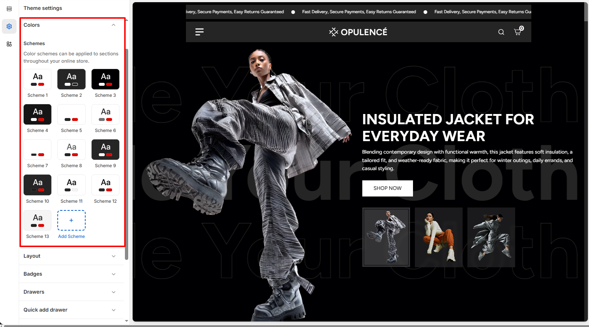
Customize Your Colors to Match Your Brand
Personalizing your theme’s colors is simple with Gravity. You can easily adjust the available color schemes or create new ones to match your brand’s visual identity and give your store a unique and polished appearance.
Steps
- Open the Theme Customizer.
- Click on the Theme Settings icon.
- Select the Colors option.
- Choose an existing color scheme or click Add Scheme to create a new one.
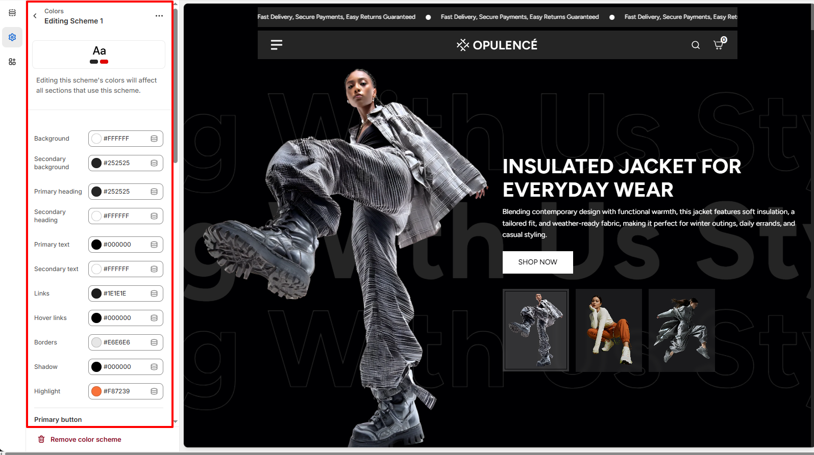
Typography
Typography plays an important role in defining the visual style and readability of your online store. With the Typography settings in Gravity, you can customize the fonts used for headings and body text across your website. Adjusting typography helps create a consistent brand identity while ensuring that your content is clear and easy for customers to read. You can also control the font size scale to increase or decrease text size across the store for better visual balance and accessibility.
Customize Your Store Fonts
Gravity allows you to easily personalize the fonts used throughout your store. You can select different fonts for headings and body text, as well as adjust the font size scale to achieve the perfect look that matches your brand style.
Steps
- Open the Theme Customizer.
- Click on the Theme Settings icon.
- Select the Typography option.
- Choose your preferred Heading Font and adjust the Font Size Scale.
- Select the Body Font and adjust its Font Size Scale if needed.
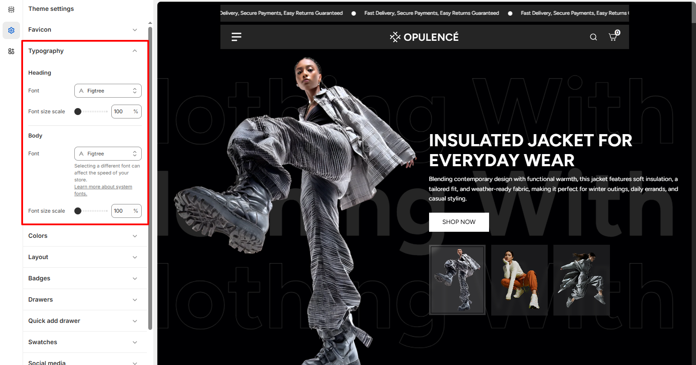
Layout
The Layout settings allow you to control the overall width and spacing of your store’s content. You can adjust the Page Container width to define how wide your website layout appears across different screen sizes. In addition, the grid spacing settings help manage the space between columns and rows in sections that use grid layouts. For example, sections like Collection List, Multicolumn Images, and Featured Collection use these grid settings to determine how much space appears between items. By adjusting column and row spacing, you can create a more compact layout or a more spacious design depending on your store’s visual style.
Customize Your Store Layout
Gravity allows you to easily customize your store layout by controlling the page width and the spacing between grid elements used in multiple sections across the store.
Steps
- Open the Theme Customizer.
- Click the Theme Settings icon.
- Select the Layout option.
- Adjust the Page Container slider to control the maximum width of your store layout.
- Modify the Column Spacing and Row Spacing to change the spacing between grid items used in sections such as Collection List, Featured Collection, and Multicolumn Images.
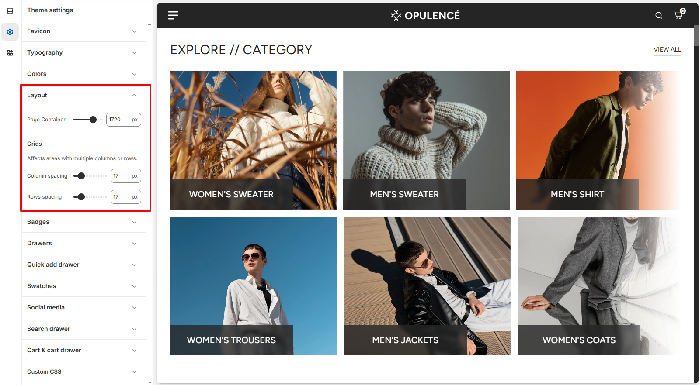
Badges
Product badges are a useful visual element that helps highlight important product status directly on the product cards across your store. In Gravity, badges can be used to display labels such as Sold Out or Sale, making it easier for customers to quickly understand product availability and promotional offers.
These badges appear on collection pages, featured collections, and other product listing sections. By customizing badge visibility, position, and styling, you can ensure that important product information is clearly visible while maintaining a clean and professional layout.
Badge Customization Options
The Gravity theme provides several settings to control how badges appear on product cards. These options allow you to enable badges, choose their position, and customize their appearance according to your store design.
- Show badges – Enable or disable product badges across the store. When enabled, badges such as Sale or Sold out will appear on product cards where applicable.
- Badge position – Choose where the badge should appear on the product image. Available options include Top left and Top right.
- Sale badge type – Select how sale information is displayed. You can show a simple Text badge or display the percentage discount (% Off).
- Sold out badge color scheme – Select the color scheme used for the Sold out badge to match your theme’s design.
- Sale badge color scheme – Choose the color scheme applied to the Sale badge when a product is discounted.
Steps
- Open the Theme Customizer.
- Click on the Theme Settings icon.
- Select the Badges option.
- Enable Show badges and adjust the badge position, type, and color schemes.
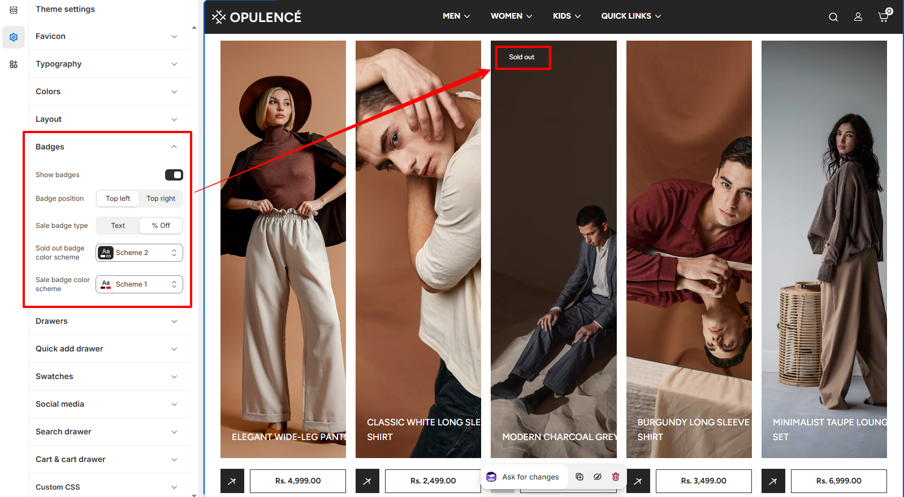
Scroll to Top
The Scroll to Top setting allows you to enable a floating button that helps customers quickly return to the top of the page. This improves navigation, especially on long pages such as collection or product pages.
Scroll to Top Settings
You can control the visibility and appearance of the scroll-to-top button. These options allow you to match the button style with your store design while ensuring easy access for users browsing through your content.
- Show Scroll to Top Button – Enable this option to display the floating scroll-to-top button on the storefront.
- Color Scheme – Choose the color scheme used for the scroll-to-top button so it matches your theme's design.
- Border Radius – Adjust the roundness of the scroll-to-top button. Higher values create a more circular button style.
Steps
- Open the Theme Customizer.
- Click Theme Settings.
- Select Scroll to Top.
- Enable the scroll-to-top button and customize its color scheme and border radius.
- Click Save to apply the changes.
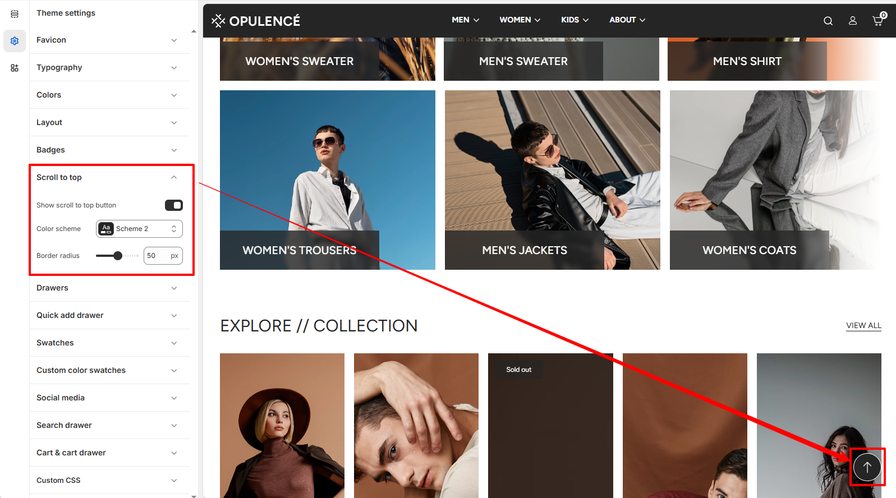
Quick Add Drawer
The Quick Add Drawer allows customers to view key product information and add items to their cart without leaving the current page. When a customer clicks the Quick Add button on a product card, a side drawer opens displaying the product image, price, availability status, and selectable options such as size or color. This feature improves the shopping experience by enabling faster product selection and reducing the number of page loads during browsing.
In the Gravity theme, the Quick Add Drawer can be customized through several settings that control how product information and inventory indicators are displayed. These options help you highlight stock availability, choose how product variants appear, and enable additional checkout features for a smoother purchasing process.
Quick Add Drawer Customization Options
- Show vendor – Displays the product vendor or brand name inside the quick add drawer. This is useful for stores that sell products from multiple brands or suppliers.
- In stock color – Choose the color used to indicate when a product is currently available in stock.
- Out of stock color – Set the color displayed when a product or variant is unavailable.
- Threshold color – Defines the color shown when product inventory reaches a low-stock level. This helps create urgency and informs customers when items are running out.
- Inventory threshold – Set the quantity limit that determines when the low-stock indicator appears.
- Options type – Choose how product variants are displayed inside the drawer. You can display options as a Dropdown or as Buttons for a more visual selection experience.
- Show dynamic checkout button – Enables dynamic checkout buttons such as Buy Now, allowing customers to proceed directly to checkout using supported payment methods.
- Show gift recipient form – Displays an additional form that allows customers to send gift card products directly to a recipient. This option is only applicable to gift card products.
Steps
- Open the Theme Customizer.
- Click the Theme Settings icon.
- Select Quick add drawer.
- Adjust the inventory colors, variant option type, and additional checkout settings according to your store’s needs.
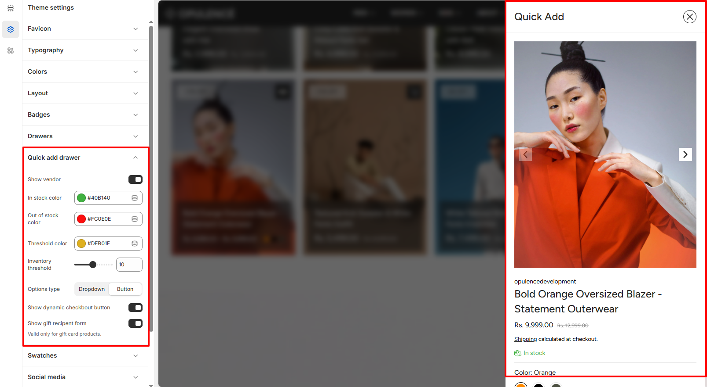
Swatches
The Swatches setting allows you to control the appearance of color variant swatches in your store. These swatches are displayed on the product page and quick add sections, helping customers visually select different product colors.
Swatch Shape
This option lets you change the shape of the color swatches used for product variants. You can choose a style that best matches your store’s design and layout.
- Swatch shape – Select the preferred shape for color swatches displayed on product pages and quick add drawers.
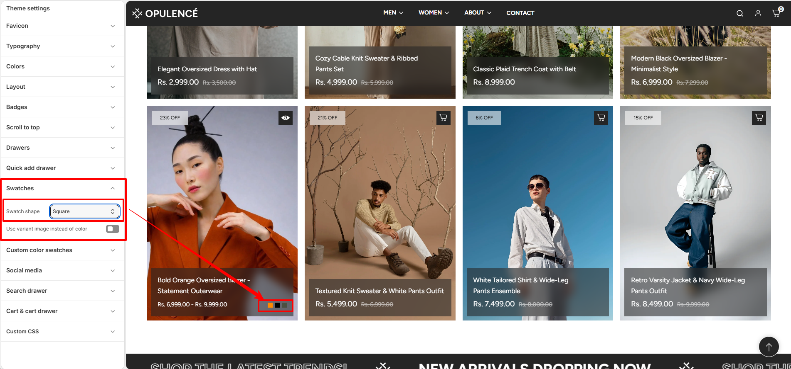
Use Variant Image Instead of Color
This setting allows you to display the variant image instead of a color swatch. When enabled, the swatch will use the assigned product variant image rather than a color value.
- Use variant image instead of color – Enable this option to show the product variant image as the swatch instead of a color.
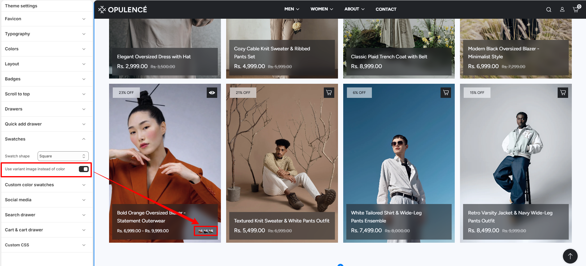
Steps
- Open the Theme Customizer.
- Click Theme Settings.
- Select Swatches.
- Choose your preferred Swatch shape.
Custom color swatches
The Custom color swatches setting allows you to define specific colors for product variant options using custom names and hex values. This ensures that color swatches are displayed accurately across product pages and quick add sections.
Custom color values
This option lets you manually assign colors to variant names by entering color labels along with their corresponding hex codes. These custom values override default swatch detection and provide consistent color representation.
-
Custom color swatches – Enter color names and their hex values in the
format
colorname:#hexcode, separated by commas. Example:red:#ff0000, green:#008000.⚠ Important NoteAlways follow the correct format when adding custom color swatches.
Format: colorname:#hexcode, colorname:#hexcode
Example: red:#ff0000, green:#008000, blue:#0000ff
Make sure to add one space after each comma before writing the next color.
The color name must exactly match the product variant name to ensure proper swatch display.
This feature works only with static variant values. Dynamic color values selected via metafields are not supported.
How it works
The theme matches the variant option values (such as "Red", "Green", etc.) with the custom entries defined in this field. When a match is found, the corresponding hex color is used to display the swatch.
- The color name entered in this setting must match the product variant value.
- If a match is found, the defined hex color is shown as the swatch.
- If no match is found, the theme may fall back to default behavior or text labels.
Steps
- Open the Theme Customizer.
- Click Theme Settings.
- Select Custom color swatches.
- Enter your color values using the format colorname:#hexcode.
- Save the changes.
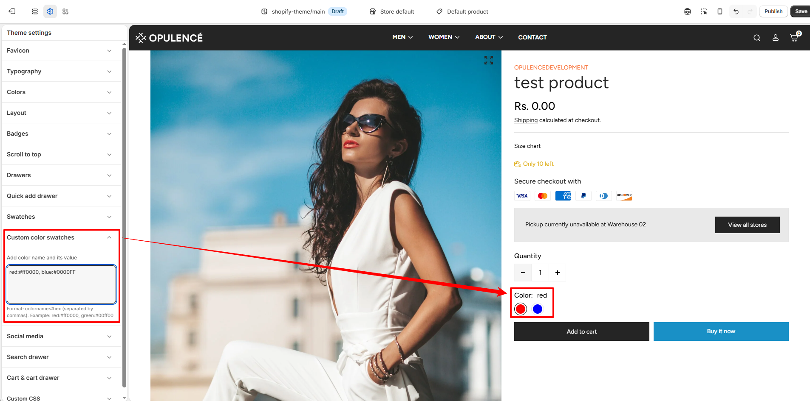
Social Media
The Social Media settings allow you to connect your store with your social media profiles. By adding your social profile links in this section, the corresponding social media icons will automatically appear in your store’s footer area.
How It Works
Simply paste the URL of your social media profile into the available input fields. When a valid link is added, the theme automatically displays the matching social media icon in the footer "Get in Touch" section of your storefront. If a field is left empty, its icon will not appear.
- Add Link – Enter the URL of your social media profile in the corresponding field.
- Automatic Icon Display – Once a link is added, the related social media icon will automatically appear in the footer.
- Hide Icon – If no link is provided, that social media icon will remain hidden from the storefront.
Steps
- Open the Theme Customizer.
- Click Theme Settings.
- Select Social Media.
- Paste your social media profile links.
- Click Save to apply the changes.
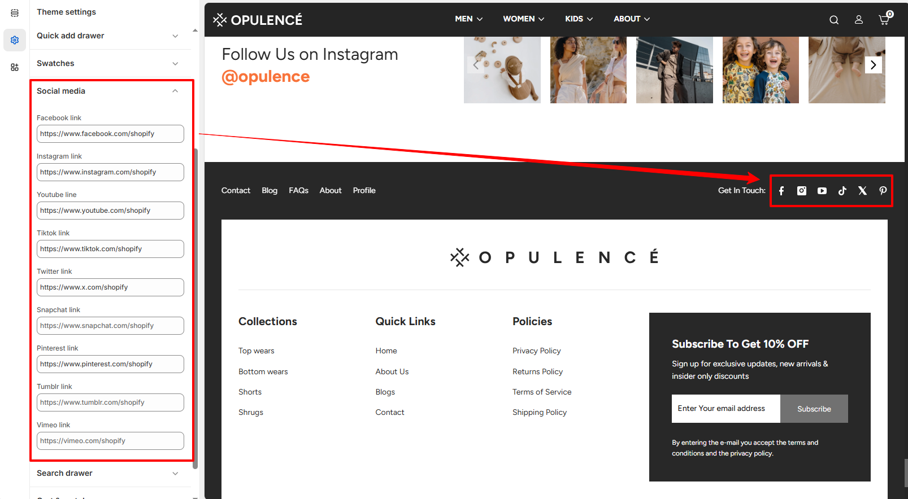
Search Drawer
The Search Drawer setting controls the appearance and functionality of the search panel that opens when customers click the search icon in the header. This drawer helps customers quickly find products by searching or selecting from suggested keywords and highlighted products.
Search Drawer Settings
You can customize the search input style and control the display of suggested keywords and featured products inside the search drawer. These options improve product discovery and make searching faster for customers.
- Input Border Radius – Adjusts the roundness of the search input field inside the search drawer.
- Show Keywords – Enable this option to display popular search keywords below the search bar.
- Keywords List – Add keywords separated by commas. These keywords appear as quick search suggestions in the drawer.
- Show Searched Products – Enable this option to display selected products inside the search drawer.
- Select Products – Choose products that will appear under the “Most Searched Products” section in the search drawer.
Steps
- Open the Theme Customizer.
- Click Theme Settings.
- Select Search Drawer.
- Customize the search input style, add keywords, or select products to display.
- Click Save to apply the changes.
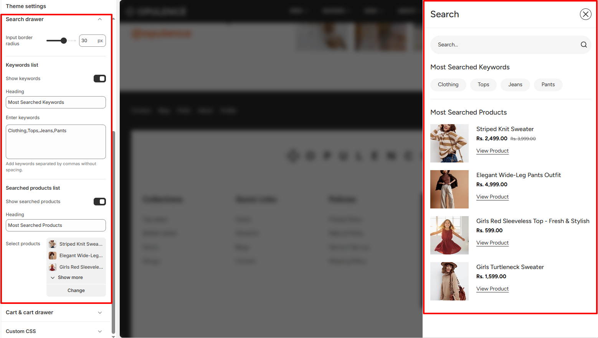
Cart & Cart Drawer
The Cart & Cart Drawer settings allow you to control how the cart behaves when customers add products to their cart. You can choose whether the cart appears as a slide-out drawer or as a separate cart page, and enable additional options like tax information, cart notes, and discount fields.
Cart Settings
These options help customize the shopping cart experience and provide additional information to customers before checkout.
- Cart Type – Choose how the cart is displayed. It can open as a slide-out drawer or redirect customers to the cart page.
- Show Tax Information – Displays tax and shipping information in the cart section.
- Show Cart Note – Allows customers to add special instructions or notes with their order.
- Show Discount Input – Displays a field where customers can enter their discount or promo codes.
- Empty Cart Drawer – When the cart is empty, selected collections can be displayed to recommend products and encourage customers to start shopping.
Steps
- Open the Theme Customizer.
- Click Theme Settings.
- Select Cart & Cart Drawer.
- Choose the cart type and enable or disable the additional cart options.
- Click Save to apply the changes.
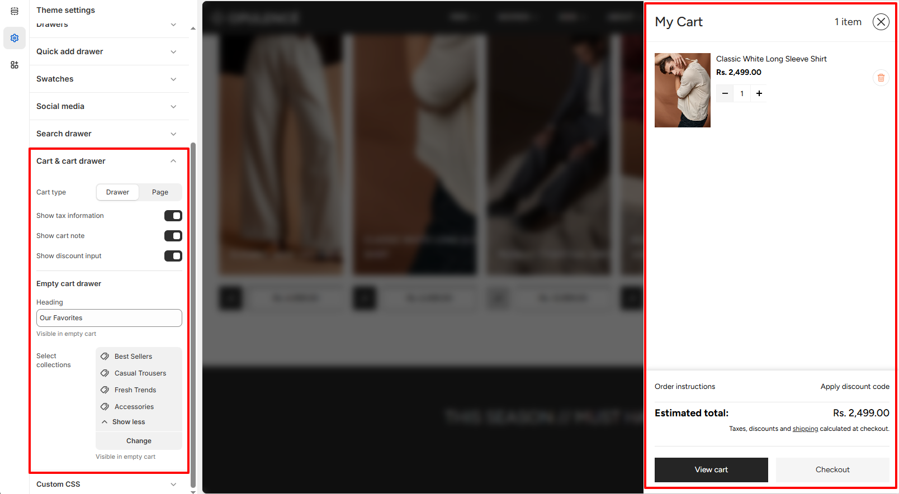
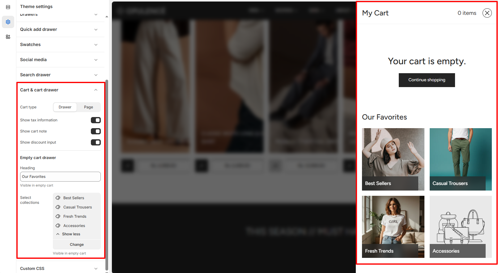
Gift Wrapping
The Gift Wrapping settings allow you to offer customers the option to add gift wrapping to their orders. You can customize the gift wrapping product, display gift wrap options in the cart, and provide a personalized gift message for special occasions.
Gift Wrapping Settings
These options help create a better gifting experience by allowing customers to include gift wrapping and personal messages with their purchases.
- Enable Gift Wrapping – Turns the gift wrapping feature on or off for your store.
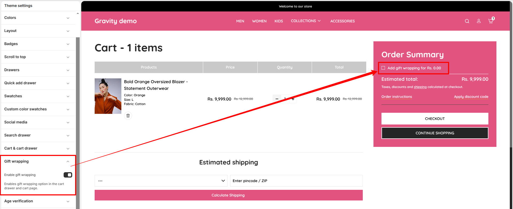
Steps
- Open the Theme Customizer.
- Click Theme Settings.
- Select Gift Wrapping.
- Enable gift wrapping and choose the gift wrap product.
- Configure the gift message option if required.
- Click Save to apply the changes.
How to Set Up Gift Wrapping
Before enabling gift wrapping in the theme, you need to create a dedicated gift wrap product in your Shopify admin. Follow the steps below to get everything configured.
Step 1 – Create a Gift Wrap Product in Shopify Admin
Steps
- Log in to your Shopify Admin and go to Products.
- Click Add product and enter a name such as "Gift Wrapping".
- Set the Price to the amount you want to charge for gift wrapping (or 0.00 if it is free).
- Under Inventory, uncheck Track quantity so the product never goes out of stock.
- Set the product status to Active.
- Optionally, uncheck Include in sales channels to hide it from your storefront collections — it will still work as an add-on.
- Click Save to create the product.
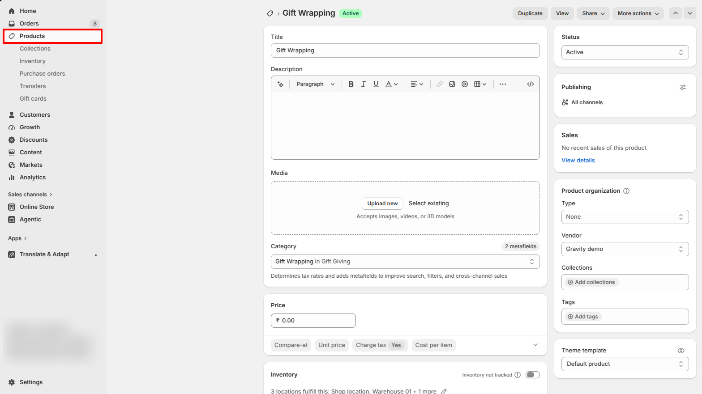
Step 2 – Enable Gift Wrapping in Theme Settings
Steps
- Go to Online Store → Themes and click Customize.
- Click Theme Settings in the left-hand panel.
- Navigate to the Gift Wrapping section.
- Toggle Enable Gift Wrapping to turn the feature on.
- Click Save to apply all changes.
Age Verification
The Age Verification settings allow you to display a verification popup before visitors can access your store. This feature is ideal for stores selling age-restricted products and helps ensure customers confirm they meet the required age before browsing.
Age Verification Settings
These options let you customize the appearance, content, and timing of the age verification popup.
- Color Scheme – Select the color scheme used for the age verification popup to match your store's branding.
- Enable Popup – Enable or disable the age verification popup for your store.
- Heading – Set the title displayed at the top of the popup, such as "VERIFY YOUR AGE".
- Description – Add a message explaining the age requirement before customers can enter your store.
- Accept Button – Customize the text for the confirmation button, such as "YES".
- Decline Button – Customize the text for the decline button, such as "NO".
- Decline Warning Message – Display a message to visitors who do not meet the required age or choose to decline.
- Show Popup After – Set the delay before the age verification popup appears after a visitor opens your store.
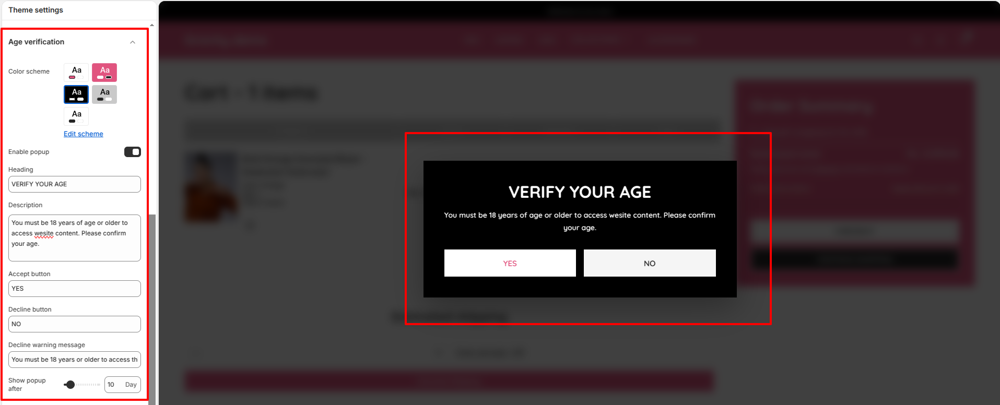
Steps
- Open the Theme Customizer.
- Click Theme Settings.
- Select Age Verification.
- Enable the popup and configure the heading, description, and button labels.
- Choose the color scheme and set when the popup should appear.
- Click Save to apply the changes.
FAQs
Why are my changes in Theme Settings not showing on the store?
Make sure you click Save in the Theme Customizer after making changes. If the issue persists, refresh the page or check that you are editing the currently published theme.
Can I change Theme Settings without affecting my live store?
Yes. You can duplicate your theme and customize the duplicate version. This allows you to test design changes safely before publishing them.
What happens if I reset or change a Theme Setting?
When a Theme Setting is changed, the update will automatically apply across all sections that use that setting, helping keep your store design consistent.